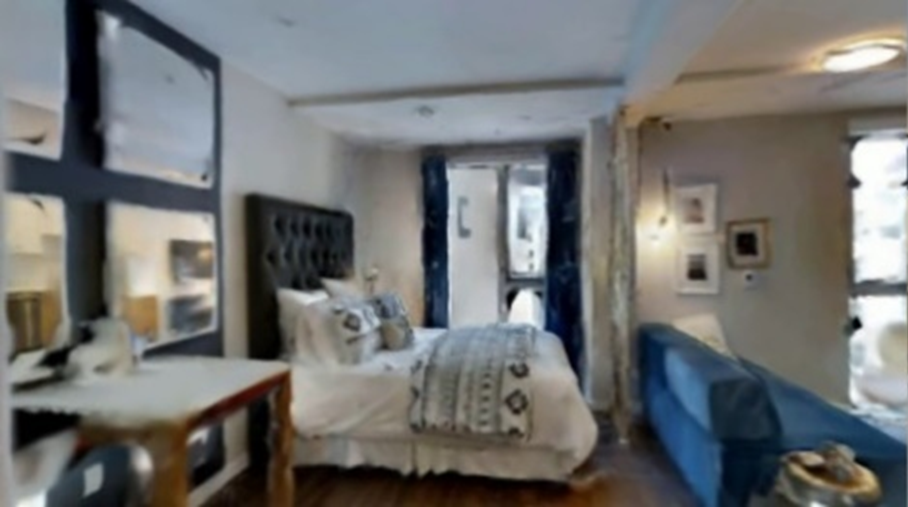
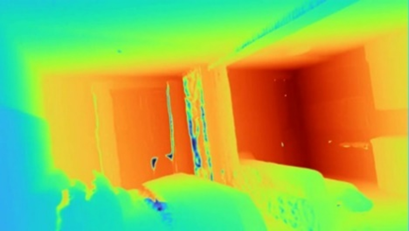
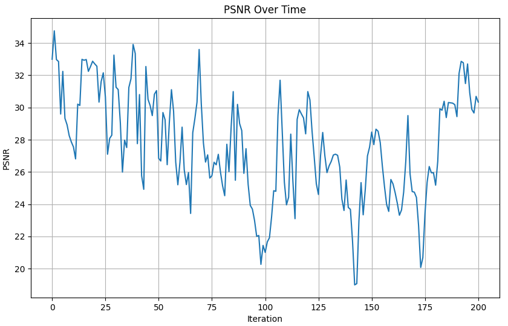
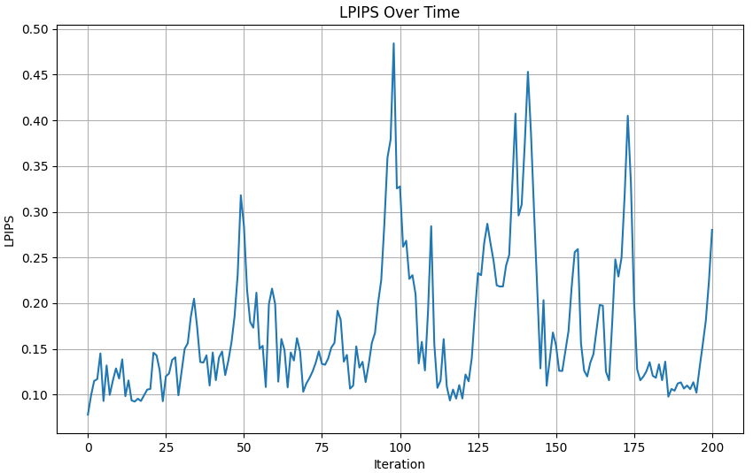

The online reconstruction module achieves 27.61dB PSNR and 1.70cm depth L1 error. The figure below shows the reconstruction quality changes over frame sequences using the Gibson Denmark scene as an example.

Online reconstruction RGB

Online reconstruction depth

PSNR per-frame evaluation

SSIM per-frame evaluation

LPIPS per-frame evaluation

Depth L1 per-frame evaluation
| Metric | Training Set | Test Set |
|---|---|---|
| PSNR (dB) | 25.28 | 21.72 |
| Depth L1 (cm) | 1.91 | 9.01 |
| MS-SSIM | 0.83 | 0.76 |
| LPIPS | 0.22 | 0.29 |
 Metrics comparison of different strategies
Metrics comparison of different strategies